건축산업기사 (2007-08-05 기출문제)
1과목: 건축계획
1. 다음 중 단독주택에서 순수주거면적이 45m2 일 때, 이 주택의 일반적인 전체바닥면적 산정 값으로 가장 알맞은 것은?
- 82m2
- 100m2
- 115m2
- 130m2
(정답률: 29%)

2. 집중형 아파트에 관한 설명 중 옳지 않은 것은?
- 대지에 대해서 건물이용도가 높다.
- 각 주호의 일조시간을 동일하게 확보할 수 있다.
- 프라이버시가 좋지 않다.
- 기후조건에 따라 기계적 환경조절이 필요하다.
(정답률: 70%)
3. 다음 중 상점 쇼윈도의 눈부심(glare)을 방지하기 위한방법과 가장 거리가 먼 것은?
- 눈에 입사하는 광속을 크게 한다.
- 차양을 달아서 외부에 그늘을 주어 내부보다 어둡게 한다.
- 특수한 곡면 유리를 사용한다.
- 유리면을 경사지게 하여 반사각을 조정한다.
(정답률: 63%)
4. 아파트 건축의 각 평면형식에 대한 설명 중 옳지 않은 것은?
- 홀형은 통행이 양호하며 프라이버시가 좋다.
- 편복도형은 복도가 개방형이므로 각호의 채광 및 통풍이 양호하다.
- 중복도형은 채광, 통풍조건을 양호하게 할 수 없다.
- 계단실형은 통행부 면적이 높으며 독신자 아파트에 주로 채용한다.
(정답률: 92%)
5. 아파트의 단위주거 단면구성 형식 중 복층형에 대한 설명으로 옳지 않은 것은?
- 구조 및 설비가 단순하여 설계가 용이하고 경제적이다.
- 복층형 중 단위주거의 평면이2개 층에 걸쳐져 있는 경우를 듀플렉스형이라 한다.
- 주택 내의 공간의 변화가 있다.
- 단층형에 비해 공용면적이 감소한다.
(정답률: 80%)
6. 학교건축의 유닛플랜 중 오픈플랜형의 환경적 특성 및 유의점으로 옳지 않은 것은?
- 톱라이트를 설치하므로써 양호한 조도분포가 얻어진다.
- 인공조명과의 조화를 도모한다.
- 교실의 면적이 크므로, 옆창의 주광조명에만 의존하는 것은 불가능에 가깝다.
- 가동칸막이를 사용하지 않으므로 차음성에 대한 고려가 필요하지 않다.
(정답률: 100%)
7. 상점의 판매 형식 중 대면판매에 대한 설명으로 옳은 것은?
- 측면판매에 비하여 충동적 구매와 선택이 용이하다.
- 측면판매에 비하여 진열면적이 커진다.
- 측면판매에 비하여 포장하기가 편리하다.
- 측면판매에 비하여 판매원의 정위치를 정하기 어렵다.
(정답률: 73%)
8. 다음 중 사무소 건축의 규모에 따른 유리한 기준층 평면형이 잘못 짝지어진 것은?
- 소규모 － 복도가 없는 형
- 중ㆍ대규모 - 중복도형
- 20층 이상 고층 - 중복도 방사선형
- 소규모 - 편복도형
(정답률: 58%)
9. 학교건축에서 단층교사와 다층교사에 대한 설명 중 옳지 않은 것은?
- 단층교사는 채광 및 환기가 유리하며 학습활동을 실외에 연장할 수가 있다.
- 다층교사는 전기,급배수, 난방 등의 배선ㆍ배관을 집약할 수 있으며,부지의 이용률이 높다.
- 단층교사는 재해시 피난상 불리하지만 치밀한 평면 계획을 할 수가 있다.
- 단층교사는 내진ㆍ내풍구조가 용이하다.
(정답률: 95%)
10. 1000명을 수용하는 사무소 건축의 연면적으로 가장 적당한 것은?
- 4000m2
- 5500m2
- 7000m2
- 10000m2
(정답률: 34%)
11. 도서관 계획에 관한 설명 중 옳지 않은 것은?
- 서고의 수장능력 기준은 능률적인 작업용량으로서 서고면적 1m2 당 150~250권 정도이다.
- 일반적으로 열람실의 크기는 도서관 봉사계획에 의해서 정해진다.
- 서고의 창호는 채광과 통풍을 원활히 할 수 있도록 크게 계획한다.
- 열람실은 서고에 가깝게 위치하는 것이 바람직하다.
(정답률: 50%)
12. 다음 중 공장건축에서 톱날지붕을 채택하는 이유로 가장 알맞은 것은?
- 균일한 조도를 얻을 수 있다.
- 기둥이 많이 소요되지 않는다.
- 소음이 완화된다.
- 온도와 습도조절이 용이하다.
(정답률: 65%)
13. 사회학자 숑바르 드 로브가 주장한 주거면적의 한계기준과 병리기준의 값으로 옳은 것은?
- 한계기준:14m2/인 병리기준:8m2/인
- 한계기준:8m2/인, 병리기준:14m2/인
- 한계기준:16m2/인, 병리기준:14m2/인
- 한계기준:8m2/인, 병리기준:16m2/인
(정답률: 69%)
14. 오피스 랜드스케이프(office landscape)계획에 대한 설명으로 옳지 않은 것은?
- 외부 조경면적을 최대로 할 수 있다.
- 배치를 의사전달과 작업흐름의 실제적 패턴에 기초를 둔다.
- 공간을 절약할 수 있다.
- 커뮤니케이션의 융통성이 있다.
(정답률: 53%)
15. 소규모 상점의 계단을 설계할 때 고려사항으로 부적절한 것은?
- 계단의 경사도가 낮을수록 고객이 올라가기 쉬우므로 경사도를 낮게 계획한다.
- 상점에서 계단은 훌륭한 장식요소가 되기 때문에 세심한 주의를 요한다.
- 계단위치의 평면형식으로는 벽면위치의 계단, 중앙 위치의 계단 등이 있다.
- 계단의 뚫리는 부분은 매장의 면적과 관련시켜 고려한다.
(정답률: 50%)
16. 다음의 주택에 관한 설명 중 옳지 않은 것은?
- 한식 주택의 가구는 부차적 존재이며, 양식 주택의 가구는 주요한 내용물이다.
- 한식 주택은 좌식생활을 반영하며 주로 실의 조합으로 구성된다.
- 양식 주택은 입식생활을 반영하며 벽돌조적식 구조의 특성을 가진다.
- 3세대대 주거는 노부모세대와 부모세대 공간, 그리고 자녀세대 공간을 각기 다른 주호 내에 계획하는 주거를 의미한다.
(정답률: 45%)
17. 주택의 동선계획에 대한 설명 중 틀린 것은?
- 동선에는 공간이 필요하다.
- 동선의 3요소는 속도, 빈도, 하중을 말한다.
- 개인, 사회, 가사노동권의 3개 동선이 서로 분리되어 간섭이 없어야 한다.
- 하중이 큰 가사노동의 동선은 되도록 북쪽에 오도록 하고, 짧게 한다.
(정답률: 알수없음)
18. 백화점 스팬(Span)의 결정요인과 가장 관계가 먼 것은?
- 매장 진열장의 배치방식과 치수
- 엘리베이터, 에스컬레이터의 유무와 배치
- 지하주차장의 주차방식과 주차폭
- 공조실의 폭과 위치
(정답률: 89%)
19. 대규모 사무소 건축 설계에 관한 기술 중 옳지 않은 것은?
- 승강기의 출발은1개소로 한정하여 집중배치 하는 것이 운영면에서 효율적이다.
- 계단은 엘리베이터 홀에 되도록 가깝게 배치한다.
- 화장실은 각층마다 공통의 위치에 두지 않고 분산 배치하여 사용에 편리하도록 한다.
- 코어내의 공간과 임대 사무실 사이의 동선을 간단하게 한다.
(정답률: 알수없음)
20. 다음 중 공장건축의 평면계획에서 가장 중요한 사항은?
- 작업장내의 기계설비
- 생산공정에 따른 레이아웃
- 작업자의 작업구역
- 위생 및 후생관계시설
(정답률: 93%)
2과목: 건축시공
21. 벽타일 공사에서 압착붙이기 공법의 붙임 모르타르의 바름두께의 표준으로 옳은 것은?
- 5~7mm정도
- 10~15mm정도
- 18~20mm정도
- 20~25mm정도
(정답률: 37%)
22. 기둥, 벽 등의 모서리에 대어 미장바름을 보호하는 철물명칭은?
- 코너비드(corner bead)
- 미끄럼막이(non-slip)
- 인서어트(insert)
- 줄눈대(joiner)
(정답률: 92%)
23. 목재의 이음 및 맞춤과 거리가 먼 것은?
- 주먹장
- 연귀
- 모접기
- 장부
(정답률: 60%)
24. 벽면적 1m2에 소요되는 불록의 수량으로서 적당한 것은?(단, 줄눈은 1cm, 블록의 크기는 길이가 39cm, 두께가 15cm 이다.)
- 9매
- 13매
- 17매
- 19매
(정답률: 40%)
25. 무량판구조 또는 평판구조에서 특수상자모양의 기성재 거푸집을 무엇이라 하는가?
- 클라이밍폼
- 터널폼
- 와플폼
- 트래블링폼
(정답률: 65%)
26. 일반적인 콘크리트 강도에 관한 다음 사항 중 틀린것은?
- 설계기준강도는28일 강도로 한다.
- 설계기준강도는 배합강도보다 크다.
- 휨강도는 압축강도보다 작다.
- 인장강도는 압축강도보다 작다.
(정답률: 36%)
27. 강관비계 중 단관 비계의 비계기둥 사이(1 스팬당)의 적재 하중의 한도는?
- 0.2t
- 0.4t
- 0.6t
- 0.8t
(정답률: 54%)
28. 창호 철물 중에 일반적으로 여닫이문에 사용하지 않는 것은?
- 정첩
- 플로어힌지
- 레일
- 도어첵크
(정답률: 65%)
29. 흙막이 공법 중 수평버팀대의 설치 작업 순서가 올바른 것은?
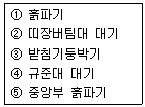
- ① → ④ → ② → ③ → ⑤
- ① → ④ → ③ → ② → ⑤
- ④ → ① → ⑤ → ③ → ②
- ④ → ① → ③ → ② → ⑤
(정답률: 69%)
30. 기존 건축물의 기초지정을 보강하거나 또는 거기에 새로운 기초를 삽입하거나 지지면을 더 깊은 지반에 옮기는 공사의 통칭명은?
- 언더피닝 공법
- 소일 콘크리트 공법
- 웰 포인트 공법
- 아일랜드 공법
(정답률: 59%)
31. 콘크리트 배합에 관한 일반적인 내용이다. 옳은 것은?
- 슬럼프값이 동일한 경우 단위수량은 굵은 골재의 최대 치수가 클수록 커진다.
- 소요 슬럼프를 얻기 위해 필요한 콘크리트의 단위 수량은 작업이 가능한 범위내에서 가능한 작아질 수 있도록 한다.
- 콘크리트의 수밀성을 기준으로 물시멘트비를 정할 경우 그 값은 60% 이상이 되도록 하여야 한다.
- 잔골재율을 가급적 높이는 게 경제적인 배합이다.
(정답률: 알수없음)
32. 거푸집의 존치기간에 대한 설명이 잘못된 것은?
- 기초, 보 옆, 기둥 및 벽의 거푸집널 존치기간은 콘크리트의 압축강도가 5N/mm2 이상에 도달한 것이 확인 될 때까지로 한다.
- 바닥슬래브 및, 지붕슬래브 밑 및 보 밑의 거푸집 판재는 원칙적으로 받침기둥을 해체한 후에 떼어낸다.
- 받침기둥의 존치기간은 슬래브 밑, 보 밑 모두 설계 기준강도의 80% 이상 콘크리트 압축강도가 얻어진 것이 확인될 때까지로 한다.
- 받침기둥 해체 후 해당 부재에 가해지는 하중이 구조계산서에 있는 그 부재의 설계하중을 상회하는 경우에는 계산에 의하여 충분히 안전한 것을 확인한 후에 해체한다.
(정답률: 19%)
33. 콘크리트의 동결융해 저항성을 증진시키기 위해 사용하는 혼화제로 가장 적합한 것은?
- 팽창제
- AE제
- 방청제
- 유동화제
(정답률: 73%)
34. 네트워크 공정표의 특성에 관한 설명으로 잘못된것은?
- 개개의 작업관련이 도시되어 있어 내용이 알기 쉽다.
- 작업순서관계가 명확하여 공사담당자간의 정보전달이 원활하다.
- 네트워크 기법의 표시상 제약으로 작업의 세분화 정도에는 한계가 있다.
- 공정표 작성 및 검사에 특별한 기능이 필요치 않으며,작성시간이 짧으며,단순하다.
(정답률: 79%)
35. 공사의 도급자가 설계ㆍ시공을 일괄적으로 계약하는 방식은?
- 총액계약 방식
- 공동도급 방식
- 턴키계약 방식
- 실비정산보수가산 방식
(정답률: 74%)
36. 석공사의 석재 표면마감이 거친 순서부터 올바르게 연결된 것은?
- 혹두기－정다듬－도드락다듬－잔다듬－물갈기
- 혹두기－도드락다듬－정다듬－잔다듬－물갈기
- 혹두기－정다듬－잔다듬－도드락다듬－물갈기
- 정다듬－혹두기－잔다듬－도드락다듬－물갈기
(정답률: 56%)
37. 벽돌 쌓기에 대한 실명으로 틀린 것은?
- 내쌓기는 모두 마구리쌓기로 하는 것이 강도ㆍ시공상 유리하다.
- 공간 쌓기 할 때 안팎벽은 벽돌,철물, 철선 등을 사용하여 상호 240cm 간격으로 연결한다.
- 창대벽돌은 윗면은15°내외로 기울여 옆세워 쌓는 다.
- 환기구멍 등의 작은 문꼴이라도 그 윗부분에는 아치를 트는 것이 원칙이다.
(정답률: 8%)
38. 콘크리트 골재의 조립률을 알아내기 위한 체의 호칭치수가 아닌 것은?
- 0.3mm
- 0.6mm
- 5mm
- 25mm
(정답률: 알수없음)
39. 다음 중 건축공사의 직접공사비 원가로 바르게 구성된 것은?
- 재료비, 노무비, 장비비, 간접비
- 재료비, 노무비, 장비비, 경비
- 재료비, 노무비, 외주비, 경비
- 재료비, 장비비, 외주비, 간접비
(정답률: 67%)
40. 다음 중 콘크리트 타설시의 일반적인 주의 사항과 가장 거리가 먼 것은?
- 넓은 장소에서는 운반거리가 먼 곳으로부터 타설을 시작한다.
- 타설할 위치와 가까운 곳에서 낙하시킨다.
- 자유낙하높이를 크게 한다.
- 거푸집의 측압이 과대하게 되지 않는 속도로 타설한다.
(정답률: 72%)
3과목: 건축구조
41. 그림과 같은 부정정보의 휨응력도를 표시한 것으로 옳은 것은?
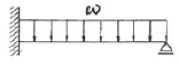
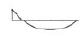
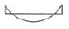
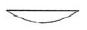
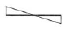
(정답률: 36%)
42. 그림과 같은 등분포 하중을 받는 보의 하중상태에서 철근 배근으로 가장 알맞은 것은?
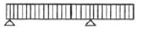
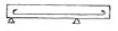
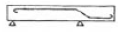
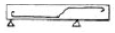
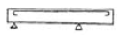
(정답률: 50%)
43. 그림과 같은 하중을 받는 기초에서 기초 지반면에 일어나는 최대 응력도는?
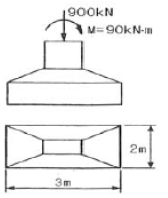
- 150 kPa
- 180 kPa
- 210 kPa
- 250 kPa
(정답률: 60%)
44. 그림과 같은 캔틸레버보에서 A지점의 휨모멘트 값은?
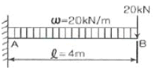
- －240 kNㆍm
- －160 kNㆍm
- 160 kNㆍm
- 240 kNㆍm
(정답률: 28%)
45. 지름이 20mm, 길이 200mm인 철근에 인장력을 가했을 때, 지름이 0.0⑤2mm 감소하였고, 길이는 0.17mm 늘어났다.이 재료의 프와송 비는?
- 3.26923
- 0.00085
- 0.00026
- 0.3⑤88
(정답률: 30%)
46. 철근콘크리트구조의 압축부재의 설계제한사항에 대한 설명 중 옳지 않은 것은?
- 띠철근 압축부재 단면의 최소치수는 300mm 이다.
- 나선철근 압축부재 단면의 심부지름은 200mm 이상이어야 한다.
- 축방향 주철근의 최소 개수는 직사각형 띠철근 내부의 철근의 경우 4개이다.
- 띠철근 압축부재의단면적은60000mm2 이상이어야 한다.
(정답률: 42%)
47. 다음 그림은 현장치기 콘크리트 벽체와 슬래브의 외부접합부를 나타내고 있다. 그림과 같이 슬래브 상부근이 90°표준갈고리로 벽체에 인장 정착될 경우 기본 정착길이로 알맞은 것은? (단, 철근=D13(공칭지름 : 12.70mm), fck=24MPa, fy=40MPa)
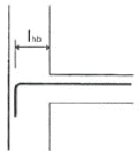
- 230mm
- 240mm
- 250mm
- 260mm
(정답률: 12%)
48. 다음의 보에 관한 설며 중 옳지 않은 것은?
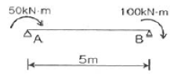
- 중앙점에서 휨모멘트의 절대치는 35 kNㆍm 이다.
- 중앙점의 전단력의 절대치는30kN 이다.
- 보에서 휨모멘트가0이 되는 지점은 A지점으로부터 되는 곳이다.
- A지점의 수직반력과 B지점의 수직반력의 크기(절대치)는 같다.
(정답률: 25%)
49. 다음의 기초 구조에 대한 설명 중 옳지 않은 것은?
- 기초는 접지압이 허용지내력도를 초과하지 않아야 하며, 또한 기초의 침하가 허용침하량 이내이고, 가능하면 균등해야 한다.
- 기초는 양호한 지반에 지지되는 것을 원칙으로 한다.
- 동일 건물의 기초에서는 이종형식의 기초를 병용하는 것을 원칙으로 한다.
- 직접기초의 지면은 온도변화에 의하여 기초지반의 체적변화를 일으키지 않고 또한 우수 등으로 인하여 세굴되지 않는 깊이에 두어야 한다.
(정답률: 69%)
50. 강도설계법에 의한 철근콘크리트 설계시 단근 직사각형보에서 균형단면을 이루기 위한 중립축의 위치 가 300mm인 경우 등가응력블럭의 깊이 ab는? (단, fck=27MPa 이다.)
- 180mm
- 210mm
- 225mm
- 255mm
(정답률: 10%)
51. 다음중 지반의 장기허용지내력도의 값으로 적당하지 않은 것은?
- 경암 : 4000 kN/m2
- 자갈 : 300 kN/m2
- 자갈과 모래와의 혼합물:150 kN/m2
- 모래 또는 점토 : 100 kN/m2
(정답률: 35%)
52. 강도설계법에서 철근의 이음에 대한 설명으로 옳지 않은 것은?
- D35를 초과하는 철근은 겹침이음을 하지 않아야한다.
- 다발 철근의 겹침이음은 다발 내의 개개 철근에 대한 겹침이음길이를 기본으로 하여 결정되어야 한다.
- 휨부재에서 서로 직접 접촉되지 않게 겹침이음된 철근은 횡방향으로 소요 겹침이음길이의 1/5 또는 150mm 중 작은 값 이상 떨어지지 않아야 한다.
- 용접이음은 철근의 설계기준항복강도 fb의 120% 이상을 발휘할 수 있는 완전 용접이어야 한다.
(정답률: 39%)
53. 지름이 150mm인 원형단면의 도심축에 대한 회전반경(단면 2차 반지름)은?
- 30.0 mm
- 32.5 mm
- 35.0 mm
- 37.5 mm
(정답률: 56%)
54. 강도설계법에서 다음과 같은 직사각형 복근보를 건물에 사용시 콘크리트가 부담하는 전단강도 øVc는? (단, fck=35MPa, fy=40MPa, ø=0.85)
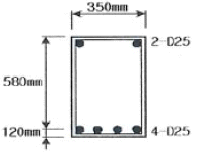
- 170 kN
- 110 kN
- 90 kN
- 70 kN
(정답률: 30%)
55. 그림과 같은 정정 라면의 반력 중A지점의 수평반력은?
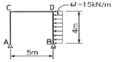
- 0 kN
- 15 kN
- 30 kN
- 60 kN
(정답률: 12%)
56. 철근콘크리트 단근 장방형보에서 유효춤 600mm, 보폭 300mm, 등가높이 100mm, fck=21MPa일 때 극한강도설계법에 의한 설계휨강도로 옳은 것은? (단, ø=0.90)
- 241 kN･m
- 265 kN･m
- 204 kN･m
- 185 kN･m
(정답률: 18%)
57. 다음 구조물에서 A단의 수평 반력의 값은?
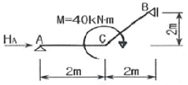
- 0 kN
- 10 kN
- 20 kN
- 30 kN
(정답률: 30%)
58. 강도 설계법에 의한 철근콘크리트보의 설계에서 fck=21MPa, fy=400MPa일 때 최소철근비는?
- 0.0025
- 0.0030
- 0.0035
- 0.0040
(정답률: 30%)
59. 그림과 같은 라멘에서 휨모멘트가 0으로 되는 부분은 몇 개인가?
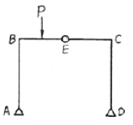
- 1개
- 2개
- 3개
- 4개
(정답률: 16%)
60. 강도설계법에 의한 철근콘크리트 플랫 슬래브 설계시 지판의 슬래브 아래로 돌출한 두께는 돌출부를 제외한 슬래브 두께가 300mm 일 때 최소 얼마 이상으로 하여야 하는가?
- 20 mm
- 40 mm
- 60 mm
- 75 mm
(정답률: 50%)
4과목: 건축설비
61. 축전지실의 구조에 관한 기술 중 옳지 않은 것은?
- 내진성을 고려한다.
- 축전지실의 천장높이는 1.8m 이상으로 한다.
- 축전지실의 전기 배선은 비닐 전선을 사용한다.
- 개방형 축전지의 경우 조명 기구 등은 내산형으로 한다.
(정답률: 55%)
62. 조명에 관한 용어인 연색성과 가장 밀접한 관계가 있는 건물은?
- 도서관
- 호텔
- 사무소
- 백화점
(정답률: 40%)
63. 어느 건물에 옥외소화전을 2개 설치한 경우 수원의 저수량은 최소 얼마 이상으로 하여야 하는가?
- 14 m3
- 20 m3
- 24 m3
- 28 m3
(정답률: 50%)
64. 전선에 과전류가 흐르면 자동적으로 회로를 차단시켜 안전을 도모하는 기기는?
- 서킷 브레이커
- 콘덴서
- 3로 스위치
- 단로기
(정답률: 84%)
65. 호텔의 주방이나 레스토랑의 주방 등에서 배출되는 세정 배수 중의 유지분을 포집하기 위해 사용되는 포집기는?
- 가솔린 포집기
- 플라스터 포집기
- 그리스 포집기
- 샌드 포집기
(정답률: 79%)
66. 방열기의 선정시 고려할 사항과 가장 관계가 먼 것은?
- 사용목적 및 그 설치장소에 적합할 것
- 경량이고 운반, 반입이 용이할 것
- 방열량이 적고 형태가 크며 효율이 좋은 것
- 사용열매의 종류에 따라 적합할 것
(정답률: 50%)
67. 옥내소화전설비에서 펌프를 이용하는 가압송수장치의 설치 기준에 관한 설명 중 틀린 것은?
- 가동용수압개폐장치(압력챔버)를 사용할 경우 그 용적은 100L 이상의 것으로 할 것
- 동결방지조치를 하거나 동결의 우려가 없는 장소에 설치할 것
- 펌프의 토출량은 옥내소화전이 가장 많이 설치된 층의 설치개수에 80L/min를 곱한 양 이상이 되도록 할 것
- 펌프는 전용으로 할 것
(정답률: 40%)
68. 벽면의 상부에 위치하여 모든 빛이 아래로 직사하도록 하는 조명방식으로 벽지, 벽화, 그림, 커튼 등 벽면 부착물이나 벽면 자체에 시각적인 흥미를 주는 건축화 조명은?
- 다운라이트
- 코니스 조명
- 펜던트 조명
- 광천장 조명
(정답률: 36%)
69. 전기에 관한 용어와 단위의 연결 중 옳지 않은 것은?
- 전압 - Volt[V]
- 전류 - Watt[W]
- 저항 - Ohm[Ω]
- 전기량 - Coulomb[C]
(정답률: 28%)
70. 배관공사 종료 후 공공수도 직결배관일 때 수압시험은 최소 얼마의 수압으로 하는가?
- 15.0 kg/cm2
- 17.5 kg/cm2
- 20.0 kg/cm2
- 22.5 kg/cm2
(정답률: 47%)
71. 100℃포화수 5kg을 100℃건조포화증기로 하려면 어느 정도의 열량이 필요한가?
- 1680 kcal
- 2695 kcal
- 3125 kcal
- 3500 kcal
(정답률: 20%)
72. 온수온돌과 같은 저온복사난방에 대한 설명 중 옳지 않은 것은?
- 방열기가 필요하지 않으며 바닥의 이용도가 높다.
- 방이 개방된 상태에서도 난방 효과가 있다.
- 대류가 적으므로 바닥면의 먼지 상승이 적다.
- 시공, 수리, 방의 모양을 바꿀 때 용이하다.
(정답률: 59%)
73. 동력설비의 감시제어 종별과 표시방법의 연결이 옳지 않은 것은?
- 경보 및 고장표시－부저 또는 벨
- 정지표시 － 오렌지색 램프
- 운전표시 － 적색 램프
- 전원표시 － 백색 램프
(정답률: 32%)
74. 백화점 화장실에 일반적으로 사용되는 환기 방식은?
- 자연 급기 － 강제 배기
- 자연 급기 － 자연 배기
- 강제 급기 － 자연 배기
- 강제 급기 － 강제 배기
(정답률: 42%)
75. 다음의 통기관에 대한 설명 중 틀린 것은?
- 통기관의 관경은 접속되는 배수관의 관경이나 기구 배수부하단위수에 의해 구할 수 있다.
- 신정통기관의 관경은 배수수직관의 관경보다 작게해서는 안된다.
- 통기관은 배관길이가 길어지면 저항이 작아지므로 관경을 줄일 수 있다.
- 통기기관은 가능한 관길이를 짧게 하고 휘는 부분을 적게 한다.
(정답률: 54%)
76. 온수난방배관 등의 공조배관에서 리버스 리턴(Reverse Return)을 채용하는 주된 이유는?
- 온수의 유량분배를 균등하게 하기 위해서
- 배관길이를 짧게 하여 열손실을 최소화하기 위해서
- 배관의 신축, 팽창의 흡수를 용이하게 하기 위해서
- 배관내 공기배출을 용이하게 하기 위해서
(정답률: 75%)
77. 다음의 급수설비에 대한 설명 중 옳지 않은 것은?
- 수격 작용은 공기실(Air Chamber)을 설치함으로써 완화 시킬 수 있다.
- 급수관의 관경은 균등표에 의하여 결정할 수 있다.
- 기구에서 고가수조의 수직높이가26m 일 때 중력에 의하여 기구가 받는 수압은 1.3kg/cm2 이다.
- 건축물의 옥상층에 저수조를 설치하여 급수하는 것은 고가수조 방식의 일종이다.
(정답률: 70%)
78. 다음 소방시설 중 소화설비에 해당되지 않는 것은?
- 옥내소화전설비
- 스프링클러설비
- 연결송수관설비
- 물분무소화설비
(정답률: 57%)
79. 팬코일유닛(FCU) 방식의 특징이 아닌 것은?
- 각 유닛의 개별제어가 가능하다.
- 덕트 방식에 비해 유닛의 위치 변경이 쉽다.
- 덕트 샤프트나 스페이스가 필요 없거나 작아도 된다.
- 각 실의 공기 정화 능력이 뛰어나다.
(정답률: 36%)
80. 설비기호 중 콕(Cook)의 일반적인 도시기호는?
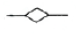
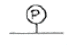
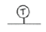
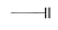
(정답률: 알수없음)
5과목: 건축관계법규
81. 다음 중 건축법상 주요구조부에 해당되는 것은?
- 지붕틀
- 차양
- 최하층바닥
- 작은보
(정답률: 알수없음)
82. 노회주차장에 설치할 수 있는 부대시설의 총 면적 기준으로 옳은 것은?
- 주차장 총시설 면적의5% 이하
- 주차장 총시설 면적의10% 이하
- 주차장 총시설 면적의15% 이하
- 주차장 총시설 면적의20% 이하
(정답률: 58%)
83. 피뢰설비에서 돌침은 건축물의 맨 윗부분으로부터 최소 얼마 이상 돌출시켜 설치하여야 하는가?
- 15cm
- 20cm
- 25cm
- 30cm
(정답률: 알수없음)
84. 다음의 건축법상 지하층의 정의에 대한 설명 중 ( )안에 알맞은 내용은?
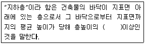
- 5분의 2
- 4분의 1
- 3분의 1
- 2분의 1
(정답률: 57%)
85. 바닥면적이 50m2 를 넘는 지하층에 1개의 직통계단과 지상으로 통하는 비상탈출구 및 환기통을 설치하려고 한다. 이 경우 비상탈출구는 출입구로부터 최소 얼마이상 떨어진 곳에 설치하여야 하는가?
- 1m
- 2m
- 3m
- 4m
(정답률: 54%)
86. 경계벽 및 간막이벽의 설치를 차음구조의 대상으로 하여야 하는 대상 건축물은?
- 아파트 세대내 간막이벽
- 병원의 진료실내 간막이벽
- 숙박시설의 객실간의 간막이벽
- 사설학원의 교실 간막이벽
(정답률: 20%)
87. 주거지역의 보도와 차도의 구분이 없는 도로에서의 주차 대수1대당 최소한의 주차구획은? (단, 평행주차형식인 경우)
- 2m×5m
- 2m×6m
- 2.3m×5m
- 2.3m×6m
(정답률: 39%)
88. 노외주차장의 출구와 입구를 각각 따로 설치하여야 하는 주차대수 규모 기준은?
- 300대를 초과하는 규모
- 350대를 초과하는 규모
- 400대를 초과하는 규모
- 450대를 초과하는 규모
(정답률: 47%)
89. 자주식주차장으로서 지하식 노외주차장의 차로구조에 관한 기술 중 틀린 것은?
- 경사로의 종단구배는 직선부분에서는 14%를 초과하여서는 아니된다.
- 굴곡부는 자동차가5m 이상의 내변반경으로 회전이 가능하도록 하여야 한다.
- 높이는 주차바닥면으로부터 2.3m 이상으로 하여야한다.
- 주차대수규모가50대 이상인 경우의 경사로는 너비6m 이상인 2차선의 차로를 확보하거나 진입차로와 진출차로를 분리하여야 한다.
(정답률: 50%)
90. 각층 거실 바닥면적이 1000m2 인 13층 사무소건물에 설치하여야 하는 승용승강기의 최소 대수는?
- 1대
- 2대
- 3대
- 4대
(정답률: 25%)
91. 건축법상의 용어에 관한 설명 중 잘못된 것은?
- 층고 － 방의 바닥구조체 윗면으로부터 위층 바닥구조체의 아래면까지의 높이로 한다.
- 반자높이 － 방의 바닥면으로부터 반자까지의 높이로 한다.
- 건축면적 － 건축물의 외벽의 중심선으로 둘러싸인 부분의 수평투영면적으로 산정한다.
- 연면적 － 하나의 건축물의 각층의 바닥면적의 합계로 한다.
(정답률: 42%)
92. 다음 중 건축법에서 규정하고 있지 않는 것은?
- 건축물의 대지에 관한 기준
- 건축물의 구조에 관한 기준
- 건축물의 설비에 관한 기준
- 건축물의 지구지정에 관한 기준
(정답률: 65%)
93. 건축설비에 관한 기술 중 틀린 것은?
- 높이 3m인 건축물은 비상용 승강기를 반드시 설치하여야 한다.
- 건축설비는 건축물의 안전⋅방화 및 위생과 에너지 및 정보통신의 합리적 이용에 지장이 없도록 설치하여야 한다.
- 다중이용시설의 기계환기설비 용량기준은 시설이용인원 당 환기량을 원칙으로 산정한다.
- 층수가 6층인 건축물로서 업무시설에 쓰이는 거실에는 배연설비를 설치한다.
(정답률: 72%)
94. 다음 중 건축허용오차의 범위 비율이 가장 작은 항목은?
- 건축선의 후퇴거리
- 건폐율
- 출구너비
- 벽체두께
(정답률: 60%)
95. 다음 중 설계도서에 포함되진 않는 것은?
- 시방서
- 공정표
- 구조계산서
- 평면도
(정답률: 36%)
96. 노외주차장인 주차전용건축물의 건축기준으로 옳지 않은 것은?
- 건폐율 : 90/100 이하
- 용적률 : 1600% 이하
- 대지면적의 최소한도 : 45m2 이상
- 높이제한 : 대지가 너비 12m 미만의 도로에 접하는 경우 건축물의 각 부분의 높이는 그 부분으로부터 대지에 접한 도로의 반대쪽 경계선까지의 수평거리의 3배 이하
(정답률: 74%)
97. 비상용승강기의 승강장 바닥면적은 비상용승강기 1대에 대하여 최소 얼마 이상으로 하여야 하는가?
- 3m2
- 5m2
- 6m2
- 9m2
(정답률: 100%)
98. 부설주차장의 설치대상시설물의 종류에 따른 설치기준이 옳지 않은 것은?
- 골프장 : 1층당 10대
- 문화 및 집회시설 중 관람장:정원 100인당 1대
- 공공용시설 중 방송국 : 시설면적 150m2 당 1대
- 백화점 : 시설면적 100m2 당 1대
(정답률: 54%)
99. 구조기준 및 구조계산에 따라 구조의 안전을 확인하여야 하는 건축물의 기준으로 옳지 않은 것은?
- 층수 : 3층 이상
- 높이 : 12m 이상
- 처마높이 : 9m 이상
- 연면적 : 1000m2 이상
(정답률: 45%)
100. 주차형식에 따른 차로의 너비 기준으로 옳은 것은?(단, 출입구가 2개 이상인 경우)
- 평행주차 － 3.3m 이상
- 60도 대향주차 － 5.0m 이상
- 교차주차 － 4.5m 이상
- 직각주차 － 5.0m 이상
(정답률: 50%)